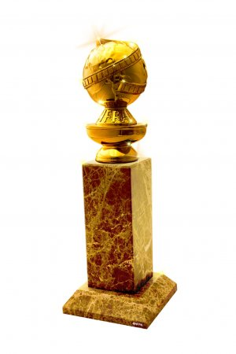
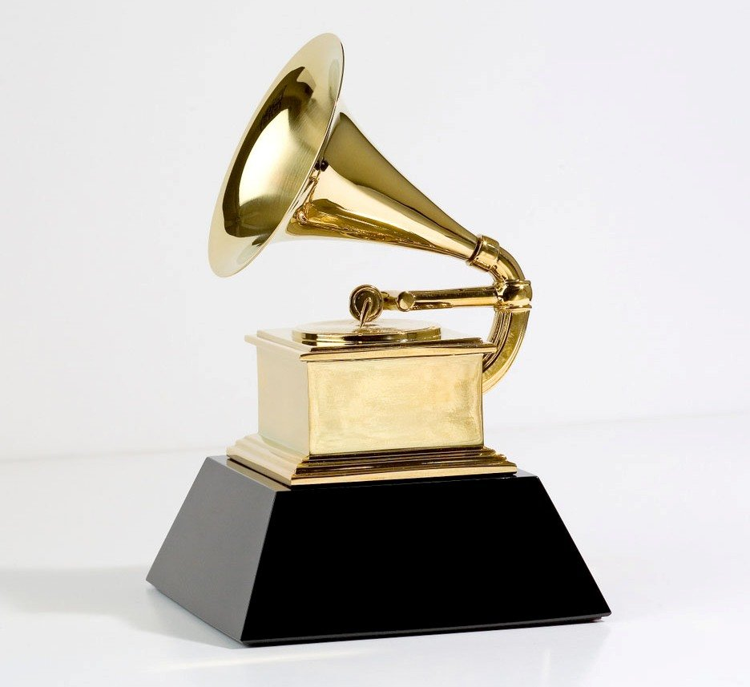

Also known as the Oscars, the Academy awards are distinctions given by the Academy of Motion Picture Arts and Sciences in Hollywood annually since its creation in 1928 for recognized achievements in the American film industry.

A large corporation that is made up of several seemingly different and unrelated businesses. One compnay owns several smaller companies that work within it independently.

A special graphic design technique done by the Graphics Group (now Pixar) shown in the 1982 movie Star Trek:The Wrath of Khan. It shows the quick destruction of a planet in CGI.

Presented by the Hollywood Foreign Press Association since 1943, these awards are given for excellence in the film and television industries in America and international.
Also known as the Gramophone Awards, these awards are bestowed annually since 1959 by the Recording Academy upon recognition of achievement in the English music industry.
a photorealistic 3D rendering software produced by Pixar Animation Studios.

A special graphic design technique done by the Graphics Group (now Pixar) shown in the 1985 movie Young Sherlock Holmes. It shows the murder of a priest by a CGI generated Stain Glass Knight.

A Japanese-based animation studio that was founded in 1985 which created multiple high-grossing and critcally-acclaimed films.